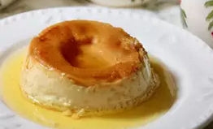

Coconut Milk Flan

Descriptions
Use coconut milk for a tropical twist
on classic flan.
Ingredients
- ¾ cup white sugar
- ¾ cup whole milk
- 1 cup coconut milk
- ½ (12 fluid ounce) can evaporated milk
- ½ (14 ounce) can sweetened condensed milk
- ½ teaspoon vanilla extract
- 3 eggs
Steps
- Preheat oven to 350 degrees F (175 degrees C).
Grease 6 (4-ounce) ramekins.
- Slowly melt sugar in a large skillet over low
heat, stirring constantly, until browned but
not scorched, about 8 minutes. Divide
caramel equally among the ramekins and
allow to cool.
- Combine whole milk, coconut milk,
evaporated milk, sweetened condensed milk,
and vanilla extract in a saucepan over
low heat. Stir continuously until it
begins to steam, about 5 minutes.
- Whisk 3 eggs together in a bowl; slowly
pour beaten eggs into the warm milk
mixture, whisking constantly until the
custard is combined.
- Place ramekins in a casserole dish and
fill with boiling water to reach halfway
up the sides of the ramekins. Divide custard
evenly among ramekins, over the caramel
sauce, about 1/2 inch from the top. Cover
casserole dish tightly with foil. Bake in
the preheated oven until the custard is set,
about 1 hour. A knife gently inserted into
the center of a flan should come out
clean.
- Remove ramekins from the water bath and allow
to cool to room temperature. Refrigerate for
2 to 3 hours before serving to chill
completely. Run the tip of a paring knife
around the edges to release the flan. Place
a plate over the top of the ramekin and
flip to release the flan onto the plate,
caramel side up.